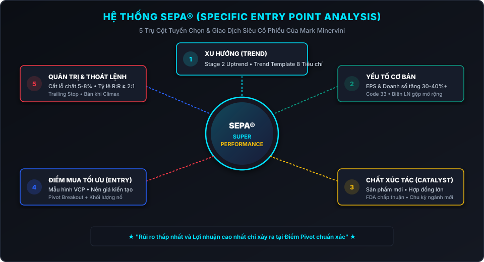
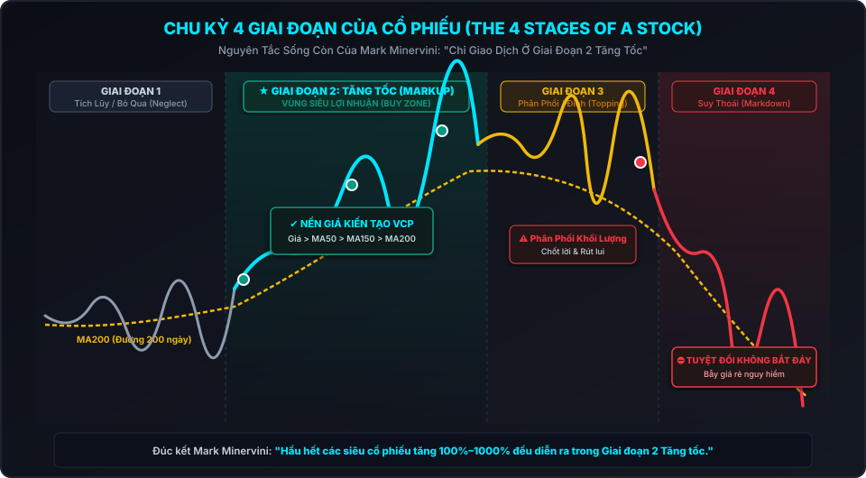
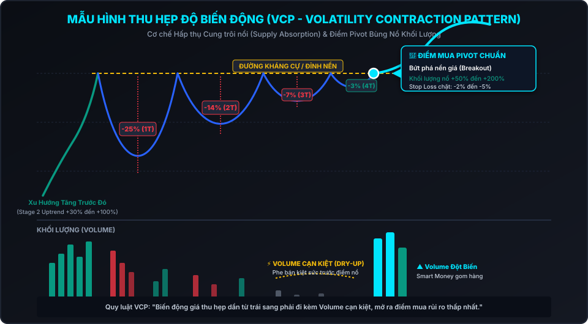

Hầu hết các nhà giao dịch thất bại không phải vì họ thiếu kiến thức kỹ thuật, mà vì họ từ chối cắt bỏ những khoản lỗ nhỏ. Thua lỗ nhỏ là chi phí kinh doanh bắt buộc. Nhưng để một khoản lỗ nhỏ biến thành một thảm họa tài chính chính là hành vi tự hủy hoại bản thân. Bạn không thể kiểm soát những gì thị trường sẽ làm, nhưng bạn hoàn toàn kiểm soát được số tiền bạn chấp nhận mạo hiểm cho mỗi lệnh giao dịch.
1. Huyền Thoại Mark Minervini & Bí Quyết Đạt Siêu Hiệu Suất (Superperformance)
Mark Minervini là một trong những phù thủy thị trường chứng khoán đương đại thành công nhất nước Mỹ. Khởi đầu từ một thanh niên bỏ học cấp ba chơi guitar trong ban nhạc rock, với số vốn khởi nghiệp ít ỏi vài nghìn USD, Mark đã tự mày mò nghiên cứu thị trường trong suốt hơn 30 năm để xây dựng nên một gia sản hàng chục triệu đô la.
Kỷ lục phi thường của Mark Minervini đã được kiểm chứng độc lập:
- Quán quân Giải Vô địch Đầu tư Hoa Kỳ năm 1997: Đạt tỷ suất sinh lời +155% chỉ trong một năm, cao gấp đôi người về nhì.
- Giai đoạn 5 năm hoàng kim (1994 - 1999): Đạt tỷ suất sinh lời bình quân hàng năm lên tới 220%/năm (tương đương tổng mức sinh lời gộp 33,500%). Trong suốt 5 năm đó, ông chỉ có đúng 1 quý bị lỗ nhẹ.
- Tái xuất ấn tượng năm 2021: Trở lại giải đấu US Investing Championship ở hạng mục tài khoản lớn triệu đô và một lần nữa giành Ngôi Vô Địch với mức lãi kỷ lục +334.8%.
Cuốn sách "Trade Like a Stock Market Wizard" (Giao dịch như một phù thủy chứng khoán) được xuất bản lần đầu năm 2013 và nhanh chóng trở thành cuốn giáo khoa bất hủ cho bất kỳ nhà đầu tư nào theo đuổi trường phái Tăng Trưởng (Growth) và Động Lượng (Momentum Trading).
Một cổ phiếu siêu hạng không phải là một mã tăng tà tà 10-15% mỗi năm. Đó là những cổ phiếu có khả năng tăng từ 100%, 300% đến 1000%+ chỉ trong vòng 12 đến 36 tháng. Mục tiêu của phương pháp Minervini không phải là "mua và ôm thụ động" (Buy and Hold), mà là tối ưu hóa vận tốc của dòng tiền: Mua đúng thời điểm cổ phiếu chuẩn bị bứt phá mạnh nhất và thoát ra ngay khi đà tăng kết thúc để luân chuyển vốn sang cơ hội kế tiếp.
2. Hệ Thống SEPA® (Specific Entry Point Analysis) - 5 Trụ Cột Tinh Hoa
Toàn bộ triết lý và hệ thống giao dịch của Mark Minervini được tích hợp trong công nghệ phân tích mang tên SEPA® (Phân Tích Điểm Vào Lệnh Chuẩn Xác). SEPA là sự giao thoa hoàn hảo giữa Phân tích Cơ bản chuyên sâu và Hành vi Giá & Khối lượng (Price & Volume Action).

SEPA được xây dựng trên 5 trụ cột bắt buộc phải đồng pha:
- 1. Xu hướng (Trend): Một cổ phiếu muốn trở thành siêu cổ phiếu bắt buộc phải đang nằm trong Giai đoạn 2 Tăng giá (Stage 2 Uptrend). Tuyệt đối không bao giờ mua cổ phiếu đang trong xu hướng giảm (Downtrend) dù định giá có vẻ "rẻ" đến mức nào.
- 2. Yếu tố Cơ bản (Fundamentals): Hầu hết các đợt tăng giá siêu hạng đều được thúc đẩy bởi sự tăng trưởng vượt bậc về Doanh thu, Lợi nhuận trên mỗi cổ phần (EPS) và Biên lợi nhuận gộp. Mark đặc biệt chú trọng nguyên tắc "Code 33" — tăng trưởng EPS và doanh thu trên 30-40% liên tiếp ít nhất 3 quý.
- 3. Chất xúc tác (Catalyst): Mỗi siêu cổ phiếu đều có một câu chuyện động lực lớn kích thích trí tưởng tượng của Phố Wall: Một dòng sản phẩm đột phá (như iPhone của Apple, chip GPU của Nvidia), bằng sáng chế FDA mới, ban lãnh đạo kiệt xuất mới, hoặc một sự thay đổi luật lệ ngành mở ra thị trường nghìn tỷ.
- 4. Điểm mua Tối ưu (Entry Point / Pivot Point): Ngay cả khi bạn tìm thấy một doanh nghiệp tuyệt vời, nếu mua sai thời điểm bạn vẫn sẽ bị dính các đợt rũ bỏ (Shakeout) đau đớn. Điểm mua tối ưu phải xuất phát từ các Nền giá kiến tạo (Constructive Bases) có rủi ro thấp nhất và xác suất bùng nổ cao nhất, tiêu biểu là mẫu hình VCP (Volatility Contraction Pattern).
- 5. Điểm thoát lệnh & Quản trị Rủi ro (Exit Points): Định nghĩa trước mức rủi ro tối đa (Cắt lỗ cứng 7-8%), luôn duy trì tỷ lệ Lợi nhuận/Rủi ro (R:R) tối thiểu 2:1 hoặc 3:1, và thiết lập các quy tắc nâng chặn lỗ (Trailing Stop) để khóa chặt lợi nhuận lớn khi cổ phiếu chạy nước rút (Climax Run).
3. Chu Kỳ 4 Giai Đoạn Của Cổ Phiếu (The 4 Stages)
Kế thừa và phát triển từ lý thuyết của Stan Weinstein, Mark Minervini chỉ ra rằng mọi cổ phiếu trên thị trường tài chính đều trải qua 4 Giai đoạn Vòng Đời nối tiếp nhau:

| Giai Đoạn | Đặc Điểm Kỹ Thuật | Hành Vi Dòng Tiền | Hành Động Của Trader |
|---|---|---|---|
| Giai Đoạn 1: Tích Lũy (Neglect Phase) | Giá dao động đi ngang trong biên độ hẹp quanh đường MA200 phẳng lì. Biên độ biến động thấp. | Các tổ chức lớn bắt đầu gom hàng âm thầm nhưng chưa vội đẩy giá. Thị trường thờ ơ, thanh khoản thấp. | Đưa vào danh sách theo dõi, tuyệt đối không mua chôn vốn. |
| Giai Đoạn 2: Tăng Tốc (Advancing / Markup) | Đỉnh sau cao hơn đỉnh trước, đáy sau cao hơn đáy trước. Giá nằm trên MA50 > MA150 > MA200 đang dốc đứng lên. | Dòng tiền tổ chức (Smart Money) mua quyết liệt. Khối lượng tăng vọt ở các phiên tăng và cạn kiệt ở các phiên điều chỉnh. | VÙNG MUA SIÊU LỢI NHUẬN. Tìm kiếm điểm Pivot để giải ngân. |
| Giai Đoạn 3: Phân Phối (Topping Phase) | Biến động giá trở nên lỏng lẻo, hoang dã. Đường MA200 bắt đầu mất đà dốc và đi ngang. Giá xuyên thủng MA50. | Tổ chức phân phối âm thầm cho đám đông nhỏ lẻ đang hưng phấn tột độ vì tin tức tốt tràn ngập mặt báo. | Chốt lời từng phần, nâng trailing stop, dừng mở vị thế mới. |
| Giai Đoạn 4: Suy Thoái (Declining / Markdown) | Giá tạo các đáy sâu mới dưới đường MA200 đang dốc xuống. Các đợt hồi phục đều là bẫy tăng giá (Bull Trap). | Phe bán hoàn toàn áp đảo. Cắt lỗ hàng loạt kích hoạt chuỗi bán tháo hoảng loạn. | TUYỆT ĐỐI TRÁNH XA. Không bao giờ được phép bắt đáy cổ phiếu Giai đoạn 4. |
4. Bộ Tiêu Chí Xu Hướng (Trend Template - 8 Tiêu Chuẩn Bắt Buộc)
Để đảm bảo bạn chỉ giao dịch với những cổ phiếu đang ở Giai đoạn 2 Tăng tốc, Mark Minervini đã lượng hóa quy trình sàng lọc bằng Bộ Tiêu Chí Xu Hướng (Trend Template) gồm 8 điều kiện kỹ thuật bất di bất dịch:
- Tiêu chí 1 Giá cổ phiếu hiện tại phải nằm trên cả 3 đường trung bình động: MA50 ngày, MA150 ngày và MA200 ngày.
- Tiêu chí 2 Đường trung bình động MA150 ngày phải nằm trên MA200 ngày.
- Tiêu chí 3 Đường MA200 ngày phải đang trong xu hướng tăng dốc lên tối thiểu 1 tháng (lý tưởng nhất là dốc lên liên tục từ 4 đến 5 tháng trở lên).
- Tiêu chí 4 Đường MA50 ngày phải nằm trên cả MA150 ngày và MA200 ngày (xác nhận đà tăng ngắn và trung hạn vượt trội dài hạn).
- Tiêu chí 5 Giá cổ phiếu hiện tại phải cao hơn đáy 52 tuần ít nhất 25-30% (phần lớn siêu cổ phiếu thực sự thường cao hơn đáy 52 tuần từ 100% đến 300%+ trước khi bứt phá).
- Tiêu chí 6 Giá cổ phiếu hiện tại phải nằm trong phạm vi 25% tính từ đỉnh cao nhất 52 tuần (càng gần mức đỉnh lịch sử mới càng tốt).
- Tiêu chí 7 Chỉ số Sức mạnh giá tương đối (RS - Relative Strength Rating) của tờ Investor's Business Daily (IBD) phải đạt tối thiểu từ 70 trở lên, lý tưởng nhất là từ 80 đến 95+ (nằm trong top 5-10% cổ phiếu mạnh nhất toàn thị trường).
- Tiêu chí 8 Khi cổ phiếu hình thành mẫu hình củng cố trước khi bứt phá, giá phải nằm trên đường MA50 ngày.
5. Mẫu Hình Thu Hẹp Độ Biến Động (VCP - Volatility Contraction Pattern)
Sau khi lọc được danh sách cổ phiếu đạt chuẩn Trend Template và có nền tảng cơ bản đột biến, công cụ định thời điểm mua (Market Timing) uy lực nhất của Mark Minervini chính là Mẫu hình VCP (Volatility Contraction Pattern).

A. Bản chất Tâm lý & Cung Cầu Đằng Sau VCP
Tại sao mẫu hình VCP lại hiệu quả đến vậy? Đó là vì VCP mô tả quá trình chuyển giao cổ phiếu từ những "tay chơi yếu bóng vía" (Weak Hands) sang "dòng tiền tổ chức thông minh" (Smart Money):
- Đợt điều chỉnh thứ nhất (1T): Giá giảm mạnh khoảng 20-30% từ đỉnh cục bộ. Nhiều nhà đầu tư thiếu kiên nhẫn hoảng sợ bán tháo.
- Đợt điều chỉnh thứ hai (2T): Giá hồi phục lên gần đỉnh cũ nhưng gặp áp lực bán hòa vốn. Lần này, biên độ giảm thu hẹp lại chỉ còn khoảng 10-15%.
- Đợt điều chỉnh thứ ba & thứ tư (3T - 4T): Áp lực bán giảm dần vì lượng cung trôi nổi đã bị tổ chức hấp thụ gần hết. Độ biến động co hẹp chỉ còn 3-5% hoặc 1-2%.
- Dấu hiệu Khối lượng Cạn Kiệt (Volume Dry-up): Ở những phiên cuối cùng trước điểm nổ, khối lượng giao dịch rơi xuống mức thấp kỷ lục (thường giảm 50-80% so với mức trung bình 50 ngày). Điều này chứng minh rằng: Phe bán đã hoàn toàn kiệt sức!
B. Điểm Mua Tối Ưu Tại Điểm Pivot (Điểm Kích Hoạt) & Bùng Nổ Khối Lượng
Khi nguồn cung cạn kiệt hoàn toàn, chỉ cần một lực cầu nhỏ từ các tổ chức lớn cũng đủ đẩy giá bứt phá qua Đường Kháng Cự (Điểm Pivot).
• Thời điểm mua: Mua ngay khi giá vượt qua mức cao nhất của đợt thu hẹp cuối cùng (Điểm Pivot).
• Xác nhận Khối lượng: Khối lượng vào ngày bứt phá phải tăng ít nhất +50% đến +200%+ so với khối lượng trung bình 50 phiên.
• Đặt Dừng Lỗ Cực Chặt: Điểm dừng lỗ chỉ cần đặt ngay dưới đáy của đợt co hẹp cuối cùng (thường chỉ từ -2% đến tối đa -5%). Nếu giá quay đầu giảm thủng điểm pivot với khối lượng lớn, hãy cắt lỗ ngay lập tức mà không cần do dự.
6. Yếu Tố Cơ Bản Của Cổ Phiếu Siêu Hạng: Quy Tắc "Code 33" & Bất Ngờ Thu Nhập
Mark Minervini không thuần túy là một Chart Reader (người đọc biểu đồ). Ông kết hợp chặt chẽ các chỉ số tài chính cơ bản để tìm ra động cơ phản lực thúc đẩy cổ phiếu:
| Chỉ Số Cơ Bản | Tiêu Chuẩn Siêu Hạng | Ý Nghĩa Đằng Sau |
|---|---|---|
| Tăng Trưởng EPS Hàng Quý | Tăng tối thiểu +30% đến +40%+ so với cùng kỳ năm trước. Tốt nhất là tăng tốc qua từng quý (ví dụ: Q1 +25%, Q2 +45%, Q3 +80%). | Minh chứng doanh nghiệp đang bước vào chu kỳ kinh doanh hoàng kim nhất lịch sử. |
| Tăng Trưởng Doanh Thu | Tăng trưởng doanh số từ +25% đến +50%+ liên tục. | Đảm bảo lợi nhuận tăng trưởng bền vững đến từ việc mở rộng thị phần thực tế, không phải xào nấu sổ sách kế toán. |
| Biên Lợi Nhuận Gộp (Gross Margin) | Biên lợi nhuận gộp liên tục mở rộng qua các quý. | Chứng tỏ doanh nghiệp có Lợi thế cạnh tranh độc quyền (Economic Moat) và quyền định giá sản phẩm mạnh mẽ. |
| Bất Ngờ Thu Nhập (Earnings Surprise) | Lợi nhuận thực tế vượt dự báo của các nhà phân tích Phố Wall tối thiểu 5-15%+. | Hiệu ứng "Con gián dưới bồn rửa chén" (Cockroach Effect): Khi một công ty tạo ra bất ngờ tích cực, khả năng cao sẽ còn nhiều bất ngờ lớn nữa ở các quý kế tiếp. |
7. Toán Học Quản Trị Rủi Ro & Công Thức Lợi Thế Kỳ Vọng (Expectancy)
Đây là phần quan trọng nhất làm nên sự khác biệt giữa một kẻ cờ bạc may rủi và một Nhà vô địch đầu tư chuyên nghiệp. Mark Minervini khẳng định:
Một chiến lược giao dịch xuất sắc không phải là một hệ thống đúng 90% thời gian. Ngay cả khi bạn chỉ đúng 40% đến 50% số lệnh, bạn vẫn có thể trở thành triệu phú nếu quản trị rủi ro đúng đắn: Luôn giữ các khoản lỗ ở mức tí hon (3-6%) và để cho các lệnh thắng chạy lớn (15-30%+).
A. Bảng Toán Học Thảm Họa Của Việc Gồng Lỗ
Toán học của thị trường tài chính là bất đối xứng. Khi bạn để lỗ càng sâu, công sức và tỷ suất sinh lời cần thiết để hòa vốn sẽ tăng lên theo cấp số nhân:
| Khoản Lỗ Thực Tế | Mức Sinh Lời Cần Thiết Để Hòa Vốn | Đánh Giá Mức Độ Nguy Hiểm |
|---|---|---|
| - 5% | + 5.26% | Rất Dễ Khắc Phục (1 lệnh bình thường) |
| - 10% | + 11.11% | Trong Tầm Kiểm Soát |
| - 20% | + 25.00% | Bắt Đầu Khó Khăn |
| - 30% | + 42.86% | Nguy Hiểm Cho Tài Khoản |
| - 50% | + 100.00% (Phải Nhân Đôi Tài Khoản!) | Thảm Họa Tài Chính |
| - 75% | + 300.00% | Gần Như Không Thể Phục Hồi |
| - 90% | + 900.00% (Phải Nhân 10 Lần!) | Cháy Tài Khoản / Phá Sản Hoàn Toàn |
• Mức cắt lỗ tối đa cho một vị thế là 7% đến 8% (không bao giờ được để vượt quá 10% trong bất kỳ hoàn cảnh nào).
• Nếu mức lãi trung bình của bạn chỉ là 10%, thì mức lỗ trung bình của bạn bắt buộc phải bị khống chế dưới 5% để duy trì tỷ lệ R:R = 2:1.
• "Bị sai trên thị trường không phải là điều đáng xấu hổ. Nhưng ngoan cố ôm một vị thế thua lỗ để nó nuốt chửng tài khoản của bạn mới là một tội ác đối với chính tương lai tài chính của bạn."
8. Chiến Lược Đi Vốn Lũy Tiến (Progressive Exposure: Chỉ Tăng Cược Khi Đang Thắng)
Rất nhiều người thắc mắc: Làm thế nào Mark Minervini có thể giao dịch đòn bẩy lớn, tạo ra tỷ suất sinh lời hàng trăm % mỗi năm mà không bao giờ bị cháy tài khoản? Bí mật nằm ở chiến lược Đi Vốn Lũy Tiến (Progressive Exposure) — nghĩa là chỉ tăng quy mô vị thế khi thị trường chứng minh bạn đang đúng.
Hãy hình dung quy tắc này giống như việc bạn "thử độ sâu của dòng sông bằng một chân trước khi bước cả hai chân xuống". Bạn không bao giờ dồn toàn bộ 100% tiền hoặc dùng margin ngay từ đầu khi chưa có lợi thế:
- Bước 1: Mở vị thế thăm dò (20% – 25% vốn): Khi thị trường mới chớm vào sóng tăng, bạn chỉ mở 1 đến 2 lệnh nhỏ để "thử nước". Nếu thị trường bất ngờ đảo chiều và bạn chọn sai, mức cắt lỗ 5%–7% trên vị thế nhỏ này chỉ làm tài khoản sứt mẻ khoảng 1% tổng vốn — hoàn toàn vô hại.
- Bước 2: Mở rộng vị thế khi có lãi — "Dùng lãi nuôi rủi ro" (Financing the Risk): Khi các lệnh thăm dò đầu tiên sinh lời tốt (ví dụ lãi 10%–15%), bạn dời Stop Loss của các lệnh đó về mức hòa vốn. Lúc này, bạn dùng chính khoản tiền lãi do thị trường cấp để làm "lá chắn bảo hiểm" tài trợ cho các lệnh mua tiếp theo, nâng quy mô giải ngân lên 50% rồi 75% danh mục. Bạn hoàn toàn chơi bằng "tiền của thị trường" mà không còn rủi ro mất vào vốn gốc.
- Bước 3: Đánh toàn lực & Margin (100% – 150% vốn): Chỉ khi toàn bộ các vị thế trước đó đều đang sinh lời bùng nổ và thị trường xác nhận một siêu chu kỳ tăng giá, bạn mới giải ngân tối đa và sử dụng đòn bẩy để gặt hái siêu lợi nhuận.
- Bước 4: Cơ chế "Phanh khẩn cấp" khi gặp chuỗi thua (Ratchet Down): Nếu bạn liên tiếp dính 2 hoặc 3 lệnh cắt lỗ (tín hiệu cảnh báo thị trường đang xấu đi hoặc bạn đang lệch nhịp sóng), lập tức thu hẹp quy mô giải ngân về một nửa hoặc rút toàn bộ về 100% TIỀN MẶT để đứng ngoài quan sát. Tuyệt đối không bao giờ cay cú mua gấp đôi để gỡ!
9. Checklist 10 Bước Kiểm Tra Của Mark Minervini Trước Khi Xuống Tiền
Trước khi bấm nút Mua bất kỳ mã cổ phiếu nào, hãy tự chấm điểm theo danh sách 10 câu hỏi kiểm tra sau:
| STT | Hạng Mục Kiểm Tra | Tiêu Chuẩn Đạt Chuẩn | Trạng Thái |
|---|---|---|---|
| 1 | Xu hướng tổng quan thị trường (Market Trend) | Thị trường đang ở Uptrend rõ ràng | ✔ Bắt buộc |
| 2 | Tiêu chí Xu hướng (Trend Template) | Đạt đủ 8/8 tiêu chí Trend Template | ✔ Bắt buộc |
| 3 | Xếp hạng Sức mạnh giá (RS Rating) | RS > 70 (tốt nhất là RS 85-95+) | ✔ Bắt buộc |
| 4 | Mẫu hình Nền giá Kiến tạo (VCP / Cup-Handle) | Thu hẹp biên độ biến động rõ ràng | ✔ Bắt buộc |
| 5 | Khối lượng giao dịch trước Breakout | Volume cạn kiệt (Dry-up) tại đáy nền | ✔ Bắt buộc |
| 6 | Khối lượng giao dịch tại Điểm Pivot | Bùng nổ vượt +50% so với MA50 ngày | ✔ Bắt buộc |
| 7 | Tăng trưởng EPS & Doanh số | EPS tăng >30-40% trong các quý gần nhất | ★ Điểm cộng lớn |
| 8 | Chất xúc tác doanh nghiệp (Catalyst) | Có sản phẩm mới, thị trường mới, FDA | ★ Điểm cộng lớn |
| 9 | Tỷ lệ Rủi ro / Lợi nhuận tính toán (R:R) | Kỳ vọng lợi nhuận tối thiểu gấp 2-3 lần rủi ro | ✔ Bắt buộc |
| 10 | Mức dừng lỗ tối đa được xác định sẵn | Đặt Stoploss không vượt quá 5-8% | ✔ Bắt buộc |
10. Lời Kết: Hành Trình Trở Thành Phù Thủy Giao Dịch
Sự khác biệt duy nhất giữa một người bình thường và một Phù thủy chứng khoán không nằm ở việc ai dự đoán tương lai giỏi hơn, mà nằm ở tính kỷ luật sắt đá và sự tôn trọng tuyệt đối đối với quy tắc quản trị rủi ro.
Như Mark Minervini đã đúc kết trong cuốn sách: "Bạn không cần phải là một thiên tài toán học để làm giàu từ thị trường chứng khoán. Bạn chỉ cần nắm vững phương pháp SEPA, kiên nhẫn chờ đợi các mẫu hình VCP hoàn hảo, chỉ mua ở Giai đoạn 2, và không bao giờ cho phép bất kỳ khoản lỗ nào hủy hoại sự nghiệp giao dịch của mình."